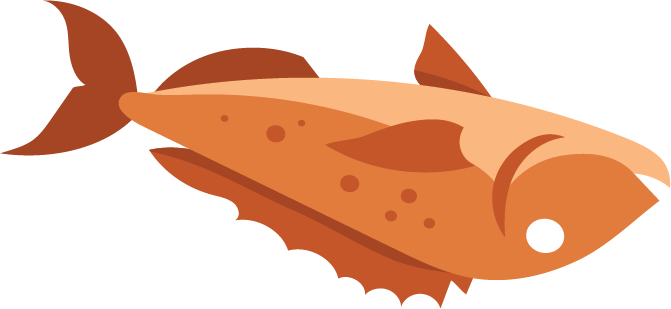
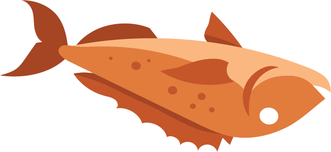

The Ocean's Journey: From Beauty to Devastation and Back Again


The ocean is vast and bountiful, full of life, critters and creatures.


However, with the advancement of industry and technology, large corporations have used the once beautiful ocean as a quick and easy way to dump waste.


 


As the pollution continues, the ocean becomes uninhabitable for the sea creatures. Some die while others leave.

Noticing the poor state of the ocean, some people start working to combat the pollution.


This, in turn inspires others to help.
The damage to the ocean has been severe and we can't fully restore it to how it was, but through hard work and determination we can get it to a much better state than it currently is in.